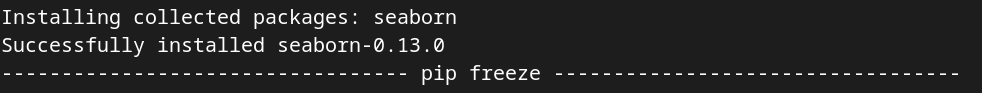
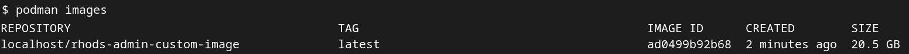

Create a Custom Notebook Image
Custom notebook images allow you to add specific packages and libraries for your projects. This level of customization provides you with a consistent development environment for your teams to work in and ensures that your projects are reproducible between team members. You may also want to create custom notebooks that are more secure than the default notebook image provided in OpenShift AI.
Image source and Pre-built images
The default OpenShift AI notebook images can be found in the Default OpenShift AI notebooks repository. This repository contains the source code, pre-built images, and examples to help you create your own image.
Additional images are available at the ODH contributions repository (opendatahub-io-contrib/workbench-images) This is a place to source additional images, as well as a great resource for best practices for building custom images. Workbench and runtime images are available as well as a script to generate custom images (https://github.com/opendatahub-io-contrib/workbench-images#building-an-image)
Exercise
We will now build our own custom image. We’ll use Fraud Detection Image as our base image. This image contains artifacts that we will be using later in the course.
We will be adding the seaborn python package to the Fraud Detection image. It is a data visualization library based on matplotlib.
|
Requirements
To build
-
Need podman
-
You could also use buildah, docker, OpenShift BuildConfigs, or a Tekton pipeline, but we’ll just build the image using podman for this course.
-
-
Need an image registry
-
We’ll use Quay as our image registry. You can sign up for a free account at Quay.io if you don’t already have one.
-
Containerfile Overview
Before you start to edit the Containerfile lets go over what this Containerfile is doing.
- Containerfile
#This is the base image we'll be working from
FROM quay.io/mmurakam/workbenches:fraud-detection-v1.0.1 (1)
# Copying custom packages
# The requirements.txt file contains additional package dependencies we want installed
COPY requirements.txt ./ (2)
# Install packages and cleanup
# (all commands are chained to minimize layer size)
RUN echo "Installing softwares and packages" && \ (3)
pip install micropipenv && \
# Install Python packages \
micropipenv install && \
rm -f ./requiremnents.txt
# Fix permissions to support pip in Openshift environments \
RUN chmod -R g+w /opt/app-root/lib/python3.9/site-packages && \ (4)
fix-permissions /opt/app-root -P
| 1 | The FROM command contains the base image that we’ll be using to build our custom image from. This will already contain common python packages that Data Scientists use and artifacts needed later in the course. Our Fraud Detection image is using quay.io/modh/cuda-notebooks:cuda-jupyter-tensorflow-ubi9-python-3.9-2023a-20230714-933b52f as the base image. You can find more base images at https://quay.io/organization/modh. |
| 2 | The COPY command copies a requirements.txt file with the extra package that we will need in our notebook. The requirements.txt file in Python is a text file that lists all the third-party Python packages or libraries that a project depends on. micropipenv is a small footprint alternative to pip that allows us to install packages from our requirements.txt file. |
| 3 | The next step is to install the packages. A lighweight wrapper for pip, micropipenv, allows us to install packages from our requirements.txt file. After the seaborn pacakge is installed we then remove the requirements.txt to clean up the files. |
| 4 | We’ll fix the permissons to support pip in OpenShift. |
Build Steps
-
Open the requirements.txt file under /6.rhod-admin/custom-images.
The only package we’re installing is seaborn. It’s a Python data visualization library that we’ll use in our notebook.requirements.txt
seaborn==0.12.2Multiple packages can be installed with the requirements.txt file by adding them on the next line. For example, the below requirements.txt file would install seaborn and the trino packages.
requirements.txt
seaborn==0.12.2 trino==0.305.0 -
Open the Containerfile under /6.rhod-admin/custom-images and add the 2 commands below to the appropriate sections in the Containerfile. Refer to the Containerfile Overview section above to verify the correct location.
FROM quay.io/mmurakam/workbenches:fraud-detection-v1.0.1COPY requirements.txt ./ -
We’ll now build the image with podman. Open a terminal and go to /6.rhod-admin/custom-images. Run the below command.
podman build -t rhods-custom-image .You should see a similar message in the logs:
-
The seaborn package is installed successfully.

-
-
Once the image is done building run the below command to make sure the image is in the list.
podman images -
Login to quay.io so we can push the image you just built up to the quay repository.
podman login quay.io -
Push the image to your quay repository.
podman push rhods-custom-image:latest quay.io/<YOUR_USERNAME>/rhods-custom-image
Now you’re ready to import your image into OpenShift AI! See the next section to learn how to import your custom image and test it out.